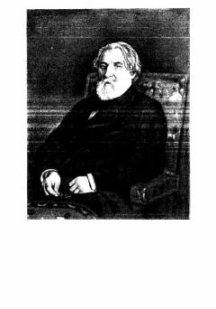

OXIvan Turgenevning mashhur hikoyalar to'plami o'zbek tilida.
Ushbu asar taniqli yozuvchi Ivan Turgenevning saralangan asarlari besh tomligining birinchi jomi bo'lib, o'zbek tiliga tarjima qilingan. Kitobda ovchining xotiralari va tabiat qo'ynidagi kechinmalari orqali davr manzaralari aks ettirilgan. Asar rus adabiyotining mumtoz namunalaridan biri hisoblanadi.